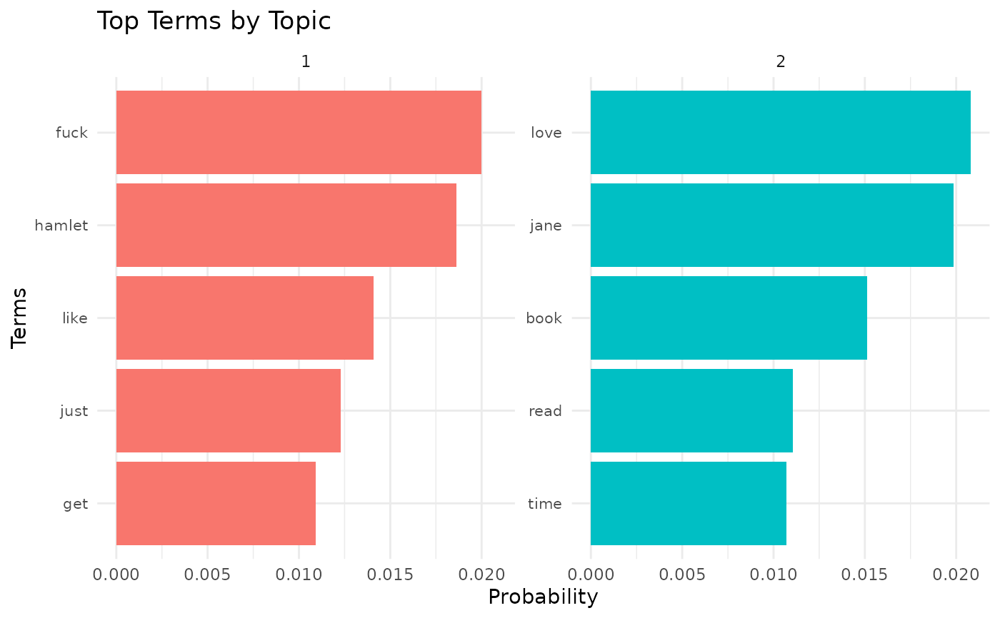

This function creates a bar plot of the top terms for each topic.
Examples
# \donttest{
# Create a temporary file with sample book IDs
temp_file <- tempfile(fileext = ".txt")
writeLines(c("1420", "2767052", "10210"), temp_file)
# Scrape reviews
reviews <- scrape_reviews(temp_file, num_reviews = 10, use_parallel = FALSE)
#> Total book IDs to process: 3
#> 2024-09-03 16:16:51.708441 scrape_goodreads_reviews: Completed! All book reviews extracted
#> Scraping run time = 8.64831590652466
#> Total books processed: 3
# Model topics
topic_results <- model_topics(reviews, num_topics = 2, num_terms = 5, english_only = TRUE)
#> Topic 1:
#> fuck, hamlet, like, just, get
#>
#> Topic 2:
#> love, jane, book, read, time
#>
# Visualize top terms for each topic
plot_topic_terms(topic_results, n = 5)

# Clean up: remove the temporary file
file.remove(temp_file)
#> [1] TRUE
# }